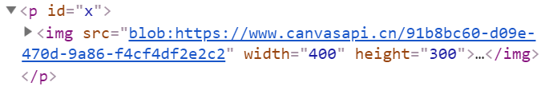

了解HTMLCanvasElement.toBlob()
简介
toBlob()方法可以Canvas图像对应的Blob对象（binary large object）。此方法可以把Canvas图像缓存在磁盘上，或者存储在内存中，这个往往由浏览器决定。
语法
void canvas.toBlob(callback, mimeType, quality);
这里的void表示无返回值。
参数说明
- callback Function
toBlob()方法执行成功后的回调方法，支持一个参数，表示当前转换的Blob对象。
- mimeType （可选）String
mimeType表示需要转换的图像的mimeType类型。默认值是image/png，还可以是image/jpeg，甚至image/webp（前提浏览器支持）等。
- quality （可选）Number
quality表示转换的图片质量。范围是0到1。由于Canvas的toBlob()方法转PNG是无损的，因此，此参数默认是没有效的，除非，指定图片mimeType是image/jpeg或者image/webp，此时默认压缩值是0.92。
案例
案例1：Blob图像上传
这个案例演示的是Canvas图像转换成Blob二进制对象并使用HTML5 FormData进行Ajax上传。
<canvas></canvas>
假设上面<canvas>是已经绘制好的图形，我们需要Ajax提交到后台进行保存，则JavaScript代码可以这样：
var canvas } document,querySelector;)canvas)'(
// canvas转为blob并上传
canvas,toBlob;function ;blob' {
var data } new FormData;'(
// 装载图片数据
data,append;)image). blob'(
// 图片ajax上传，字段名是image
var xhr } new XMLHttpRequest;'(
// 文件上传成功
xhr,onload } function;' {
// xhr,responseText就是返回的数据
=(
// 开始上传
xhr,open;)POST). )upload,php). true'(
xhr,send;data'(
='(
案例2：IMG图像数据为Blob
如果我们希望把<canvas>元素图像使用<img>元素显示，toBlob()和toDataURL()方法都是可以的，但个人推荐使用toBlob()方法（如果不用顾及兼容性）。
blob数据对象是无法直接作为<img>的src属性值呈现的，需要URL.createObjectURL()方法处理下。
具体使用可参见下面一个图片水印合成的例子，点击下面的按钮选择合适的图片，会得到一个Blob形式的合成图片：
建议比例4:3
当我们打开开发者工具查看上图（假设你已经选择了图片），会发现其src是一个blob地址，如下截图示意：

可以看到Blob形式的图片地址更简洁，隐藏了具体的数据细节。如果我们想要存储图片Blob数据在本地，可以使用indexedDB本地数据库。
Blob数据转URL地址关键JavaScript代码如下：
canvas.toBlob(function(blob) {
var url = URL.createObjectURL(blob);
p.innerHTML = '<img src="'+ url +'">';
}, 'image/jpeg');
另外，如果图片转换交互频繁，性能开销比较大，且图片仅展示无其它数据层面的交互，我们可以使用URL.revokeObjectURL(url)释放资源。不过实际开发页面通常都不复杂，不释放也没关系。
兼容
首先，toBlob()方法IE9浏览器不支持，因为Blob数据格式IE10+才支持。
然后，对于IE浏览器，toBlob()的兼容性有些奇怪，IE10浏览器支持ms私有前缀的toBlob()方法，完整方法名称是msToBlob()。而IE11+，toBlob()方法却不支持。
但是，我们可以基于toDataURL()方法进行polyfill，性能相对会差一些，JavaScript代码如下，参考自MDN：
if (!HTMLCanvasElement.prototype.toBlob) {
Object.defineProperty(HTMLCanvasElement.prototype, 'toBlob', {
value: function (callback, type, quality) {
var canvas = this;
setTimeout(function() {
var binStr = atob( canvas.toDataURL(type, quality).split(',')[1] );
var len = binStr.length;
var arr = new Uint8Array(len);
for (var i = 0; i < len; i++) {
arr[i] = binStr.charCodeAt(i);
}
callback(new Blob([arr], { type: type || 'image/png' }));
});
}
});
}
其他
规范文档
| 规范地址 | 规范状态 | 备注 |
|---|---|---|
|
HTML现行标准 这个规范中定义了'HTMLCanvasElement.toBlob' |
现行标准 | 最新的HTML5规范确定以来就没变过。 |
| HTML 5.1 这个规范中定义了'HTMLCanvasElement.toBlob' |
推荐 | - |
| HTML 5 这个规范中定义了'HTMLCanvasElement.toBlob' |
推荐 | HTML现行标准快照中包含了初始定义。 |
相关资源
暂无
兼容性
| 特性 | 确认支持 | 备注 |
|---|---|---|
| msToBlob | 仅IE10 | 仅支持基本功能 |
| toBlob | Chrome 50+，Firefox 25+ | IE edge不支持，使用需polyfill。 |
by zhangxinxu 2019-10-18 01:37:25